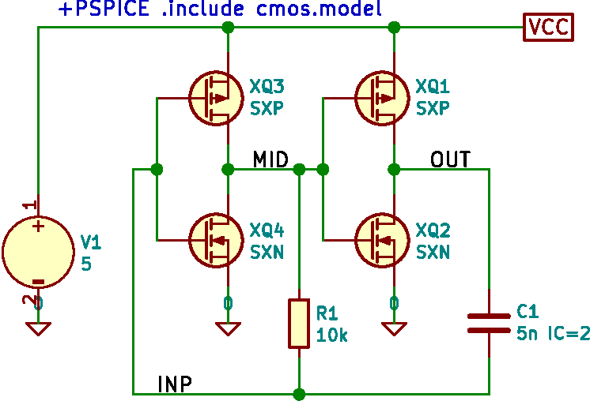
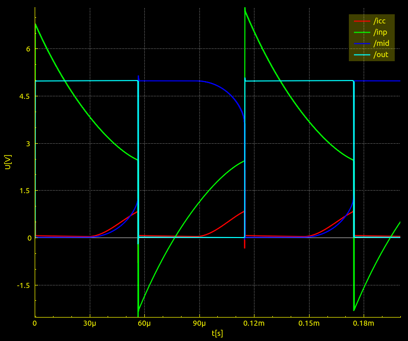
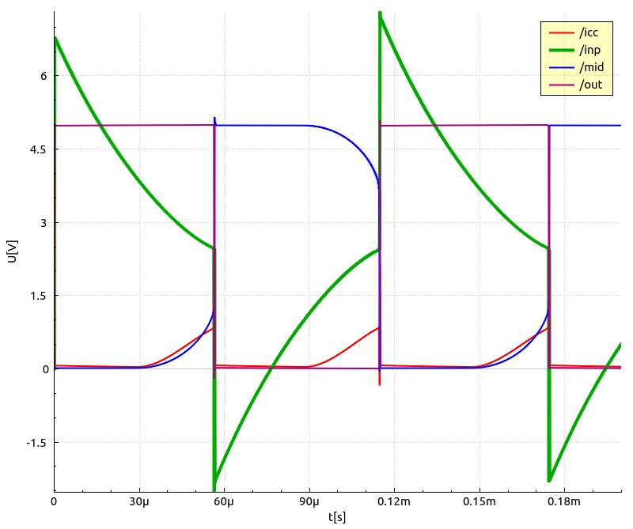
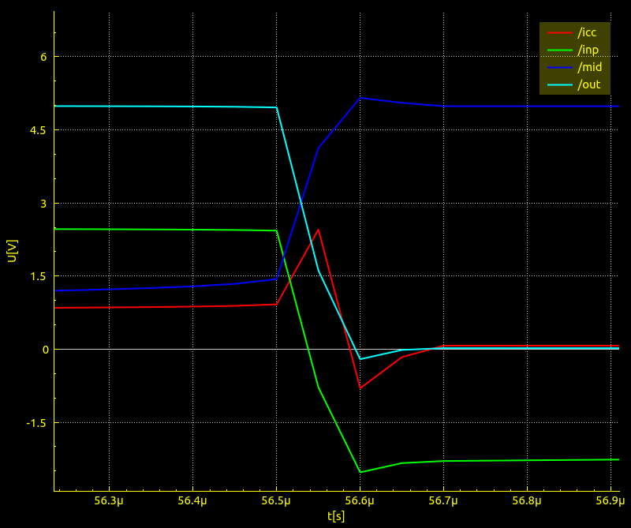
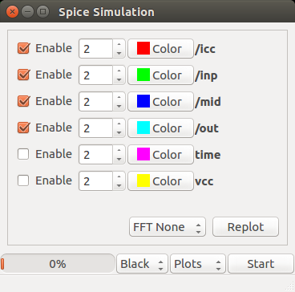
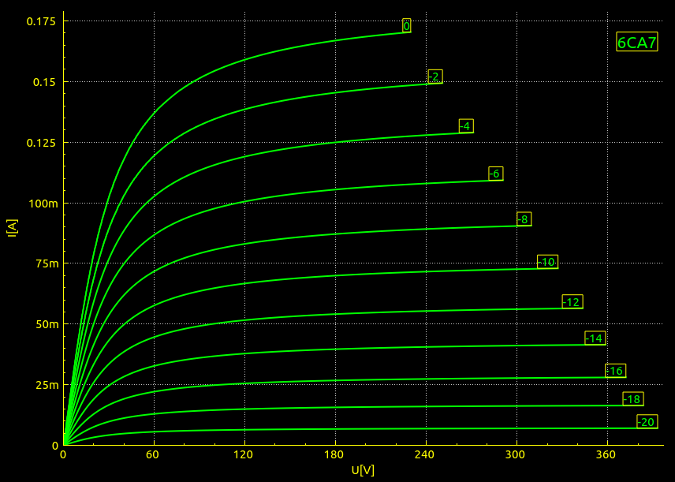
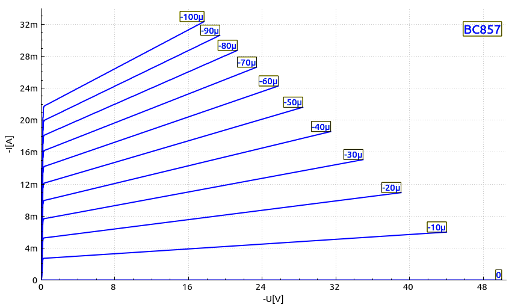

Simulace elektronických obvodů je v Linuxu dost problém, přece jen v prostředí Windows je více možností. Dříve jsem používal Qucs, ale je hodně omezený na předdefinovanou sadu součástek (ale nesleduji to, mohlo se to zlepšit). Simulace se ne vždy podaří, někdy je nutné měnit některé parametry, které však nejsou dobře popsány. Kromě toho musím nakreslit schéma, které je mi pak už k ničemu pokud se rozhodnu obvod realizovat. Dále se zabývám výhradně tranzientní simulací pomocí ngspice i když program nabízí daleko širší možnosti. Časový průběh bývá to nejčastější, co nás zajímá. Příklad obvodu je zvolen záměrně tak, aby měl silnou kladnou zpětnou vazbu, protože s tím mohou mít simulátory problém.

Schéma nakreslíme v eeschema (Kicad). Důležité je pochopit formát souboru *.cir pro ngspice a jak do něj dostat potřebné parametry. +PSPICE uvozuje text, který je připojen na konec souboru *.cir, -PSPICE uvozuje text kopírovaný na začátek. Není tedy nutné ručně tento editovat – nakonec ruční editace tohoto souboru je nevhodná, protože je generován programem. Hodnoty součástek používá simulační program a tedy to lze najít v manuálu ngspice, který je jako ostatně většina podobných manuálů dost nepřehledný. Složené prvky jsou prefixovány písmenem X (zde mosfety XQn a modely SXN a SXP), což značí vlastně podobvod. Podle manuálu se vezmou příslušné prvky, pospojují se dohromady a správně se namapují vnější vývody - viz soubor cmos.model. Nic víc a nic míň, to je celý princip jak udělat model pro složitější obvod s daným rozložením vývodů. Přitom schéma lze dále použít i pro kreslení plošného spoje. Důležité je dodržovat pro reference prvků schématu správné prefixy – pro složené prvky musí být prefix X, což eeschema umí zařídit pro prvky s prefixem U a IC, pro ostatní si musíme dát pozor. V zásadě tedy lze používat prvky ze standardních knihoven a ty pak lehce přizpůsobit simulaci. Rozložení vývodů u tranzistorů zde není řešeno, pořadí vývodů ve schématu je tak, jak vyžaduje model – bylo by nutné pozměnit pořadí vývodů u pouzdra. Jiná možnost by byla použít standardní rozložení vývodů a pro simulaci toto přizpůsobit pomocí přidání [Spice_Node_Sequence] uživatelského pole a definovat sekvenci např. 2,1,0 – viz. poznámka v souboru *.cir. Netlist vytvoříme ve formátu Spice, tedy soubor se sufixem .cir se zaškrtnutými volbami „Default format“ a „Prefix references 'U' and 'IC' with 'X'“ (pokud je potřeba). Novější verze programu Kicad už by měl mít simulátor vestavěn.
V includovaném souboru cmos.model jsou tedy modely součástek (mohou být includovány z dalších souborů, modely některých součástek lze najít na webu pod heslem spice model), poslední řádek .tran 50n 200u uic určuje právě provedení tranzientní simulace s krokem 50ns do 0.2ms s použitím počátečních podmínek uic. Parametry simulace je vhodné volit tak, aby výsledná data měla tak do 10000 bodů, jinak je grafika programu dost pomalá. Zde je to 4048 bodů (cca 200u/50n, tedy zhruba podíl celkového času a kroku).
Po tomto obsáhlém úvodu se konečně dostávám k jádru pudla. Program ngspice má sice bohaté možnosti, ale pokud chci dostat výstupy v nějakém rozumném tvaru, musím dále zpracovat data např. pomocí gnuplot. Je to dost otravná činnost, stále se opakuje přibližně stejný postup. Vzhledem k tomu, že k ngspice existuje poměrně kompaktní API pro jazyk C, bylo možné vytvořit aplikaci v Qt, která nejčastěji používané postupy automatizuje. Co je tak nejvíce potřeba :




Program po ukončení výpočtu (spouští se tlačítkem Start) vypíše jména spočtených vektorů (viz předchozí obrázek), vektory prefixované znakem slash automaticky použije pro zobrazení. Takovéto vektory vzniknou, pokud spoj ve schematu označíme pomocí local label. Viz úvodní schema. Časem se člověk naučí různé triky, zde například měření odebíraného proudu ICC - viz řádek HXX1 0 /ICC V1 100 v souboru cmos.model. Všimněte si překmitů na vstupu (zelená čára). Z toho je například vidět, že pokud obvod sestavíme z reálných CMOS invertorů, které obsahují na vstupech záchytné diody, pak je nutné přidat na vstup ještě jeden odpor, jinak to nebude fungovat. V reálu se tam ten odpor skutečně dává, ač to na první pohled vypadá jako zbytečnost.
A nakonec jsem přidal FFT poněkud naivně implementovanou. Původní v ngspice data prodlouží na přirozenou mocninu dvou a data nějak doplní. To se mi moc nelíbilo, takže data naopak zkrátím, ale provedu lineární interpolaci v čase do nových intervalů. Trvá to poněkud dlouho, počítají se všechny vektory, není použita externí knihovna, algoritmus je dost prostý, nicméně do 65536 datových bodů se to dá snést. Víc už je stejně obtížné zobrazit. Okna jsou pouze obdélníkové a kosinové. Pokud chceme FFT použít, je nutné nastavit okno ve widgetu Plots a znovu spustit simulaci tlačítkem Start.
Nakonec jsem přidal ještě podobný prográmek který umí zobrazit voltampérové charakteristiky aktivních prvků jako jsou bipolární tranzistory, JFET, MOSFET a elektronky. To je v samotném ngspice sice možné, ale následné zpracování získaných dat bývá dost těžkopádné. Aby nebylo nutné komplikovat GUI programu, parametry se předávají v souboru *.cir, což je standardní soubor pro ngspice, který musí zachovávat určitou strukturu. Příklady jsou v adresáři trace, soubory *.tr.cir. Přece jen, když získáme model z internetu nebo jej vytvoříme, je dost dobré alespoň zběžně ověřit, zda to není úplná pitomost. Sice by bylo možné zaintegrovat to do jednoho univerzálnějšího programu, ale nechtěl jsem to komplikovat. Jednodušší zdroják si snáze můžeme upravit dle svých vlastních potřeb.


Sdílenou knihovnu pro ngspice je bohužel nutné zkompilovat ze zdrojáků. Na 64.bit Linuxu by to neměl být problém, ani to netrvá tak dlouho.
Takto vytvořená knihovna je nezávislá na případně již instalovaném programu ngspice, vše je v adresáři $HOME/.spice a tato cesta je pak použita v Makefile výsledného Qt programu. Bylo zvoleno API pomocí dlopen, knihovna pak nemusí být na systémové cestě, což je určitá výhoda. Vyzkoušel jsem verze 31 a 32 na Ubuntu 16.04, obě bez problémů.
K tomu ještě malá poznámka. Program ngspice vznikal v anglickém prostředí a s tím je spojen docela podezřelý problém. V českém prostředí má desetinné číslo jiný tvar. A protože tohle zjevně nikdo neřešil, program se může chovat dost divně. Pomůže příkaz export LC_NUMERIC="C". Je to v podstatě taková možnost poslední záchrany, v programu by mělo být locale korektně nastaveno, ale princip používání v C programech je patrně komplikovaný (nepodařilo se mi ho úplně pochopit) a nemusí "probublat" přes volání funkce dlopen() tak, jak je to potřeba. Prostě lokalizace je ďáblův výmysl. Mně to fungovalo i bez této berličky, ale upozorňuji, že tam problém být může. Hledat příčinu ve zdrojácích ngspice se mi nechtělo, bez pochopení jak gcc tyto systémové proměnné používá je to nemožné a pochopit to je moc práce.
Zdrojáky tohoto programu rozbalíme a zkompilujeme standardním způsobem pro Qt4 nebo Qt5 (qmake, make, výsledek v bin). Pokud jsme změnili cestu $HOME/.spice v předchozím postupu, je nutné jí změnit i v qsim/spice/Makefile. Zde se vytváří jen C++ obal pro ngspice dll API jako statická knihovna, je to tak jednodušší než cpát to rovnou do Qt.Bude nějak poděděna z Qt, ale netuším jak. Ostatně projekt je určen pro hobby použití, když kouknete do zdrojáků, je jasné, že jsem to slepil z různých starších úloh jen aby to nějak posloužilo. Nejsou tam žádné komentáře, ale zdrojáky jsou dost minimalistické, takže je možné doplnit různé další funkce. Prostě třeba se to bude někomu hodit, víc bych od toho ani nečekal.
Program ngspice má dost široké možnosti. Pro člověka, který umí trochu programovat je lepší použít API, které je poměrně jednoduché, než se učit přímo příkazy ngspice, které ne vždy fungují podle očekávání. API vyhodí hotové vektory jako pole reálných čísel a ta je pak možné zpracovávat podle libosti. Existuje i API pro python, ale moc mě to nenadchlo, přece jen C nebo C++ ovládám lépe. Nicméně pro někoho to může být asi použitelnější. Možnosti tu tedy jsou, chce to jen trochu práce a ochotu se něco naučit. Druhá věc je, jak moc se dá simulacím věřit. Je nutné si uvědomit, že je to jen určitá aproximace reálných obvodů. Pro ověření, že je určitý obvod životaschopný může být simulace lepší a rychlejší než to lepit z reálných součástek na breadboardu. Ve finále ale stejně nic jiného nezbyde a výsledek může nepříjemně překvapit. Jsou lidi, kteří namodelují elektronkový zesilovač, nad výsledkem provedou FFT a z toho usoudí, že je to super duper HiFi se zkreslením nula nula nic. Realita ale bývá úplně jiná, hlavně pokud daný experimentátor netuší jak modely součástek a simulace vlastně fungují. Pro pochopení je nejlepší to vyzkoušet a porovnat s realitou.